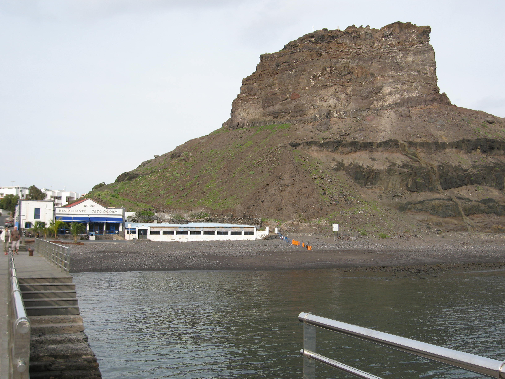

la isla de Gran Canaria

en la provincia de Las Palmas
así como por ser el menos poblado de la isla
conocida popularmente como la Catedral de Arucas
| Visitado | Name | Description | Municipio | Url | Location maps | Photo |
|---|---|---|---|---|---|---|
| está situado en el noroeste de la isla de Gran Canaria |
Agaete | Oficial Agaete Page | |
 | ||
| es una localidad y municipio español perteneciente a la isla de Gran Canaria, en la provincia de Las Palmas |
Agüimes | Oficial Agüimes Page | |
|||
| ser el municipio cuya cabecera municipal se localiza a mayor altitud, así como por ser el menos poblado de la isla |
Artenara | Oficial Artenara Page | |
|||
| Destaca dentro de su patrimonio histórico-artístico la iglesia de San Juan Bautista, conocida popularmente como la Catedral de Arucas |
Arucas | Oficial Arucas Page | |